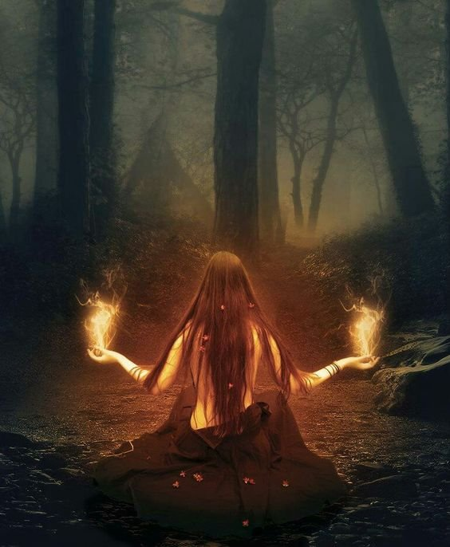

9 Испытание огня
Ночью я забралась на второй ярус и тогда услышала голос:
- Сейчас мы проведём тебя через наш детектор лжи.Ты должна отвечать честно, чтобы стать одной из нас. А сейчас, слушай внимательно: мы будем задавать тебе вопросы. Стоит тебе солгать, попытаться убежать или позвать на помощь - мы пропустим огонь, сильный ток. Физически тебе вреда не будет, но нервная система среагирует на это так, словно по тебе течёт жидкий огонь или расплавленный металл. Слушай, что мы говорим, тогда сможешь пройти это испытание и мы не причиним тебе боль. Это понятно?
- Очередные психологические трюки?
Я ощутила жжение в позвоночнике, побежали импульсы.
- Это самовнушение, - говорю с усмешкой, - Ничего вы мне не сделаете. Играете в игры и надеетесь, что я попадусь. Не выйдет!
Жжение стало сильнее.
- Не мешай нам работать, иначе пустим ток уже сейчас. Это было первое предупреждение.
Я вдруг осознала, что оказалась в ловушке. Никто ничего не знает. Кричать нельзя. Придется проходить этот детектор.
- Хорошо, молчу. Слушаю.
- Отвечать будешь только "да" и "нет". Солжёшь - электрический разряд. Это понятно?
- Да.
- Потренируемся на простых вопросах. Ты начала сомневаться, что вчера мы сказали тебе правду?
- Под вечер пришла мысль, что вы меня испытываете.
- Допустим, что мы тебя вчера испытывали, на самом деле действительно собираемся принять тебя в нашу семью. Ты хочешь прийти к нам?
- Да
- Ради своих своих близких можешь украсть, обмануть?
- Да.
- Убить?
- Не знаю. Кажется, что могу, но когда дойдет до реализации - не знаю, смогу ли справиться.
- Нам не нужна реализация, нужно, чтобы ты искренне ответила, что думаешь. Можешь убить, пойти на преступление?
- Да.
- Отлично.
- Эдик - один из твоих немногих друзей. Помнишь тот день, когда он сказал - вдруг они тебя попросят меня убить? Представь, мы стали тебе родными и близкими существами, ближе нас у тебя никогда нет. Ты могла бы это сделать ради нашей семьи? Или хотя бы просто дать согласие на его смерть, при этом пальцем не шевельнуть.
Я замялась. Ток и жжение в позвоночнике увеличились.
- Отвечай же!
- Да.
- Отлично. Пока говоришь честно. Ты могла бы пойти на сговор против Эдика, Роберта или Гарика ради того, чтобы обрести силу и знания нашего мира? Огромную силу?
- Если в результате кто-нибудь из них погибнет или покалечился, то нет.
- А если жизни и здоровью не будет угрожать опасность?
Хотелось закричать, что нет. Вот это был по-настоящему неприятный вопрос. Сказав да, я покажу себе самой, кем являюсь на самом деле. Сказав нет - получу удар током.
- Да.
- Ты доверяешь нам?
- Да.. мм, нет. Нет!
- Пока отлично! Молодец!
- Тебе неприятно, что Эдик нас недолюбливает. Что нелицеприятно о нас отзывается?
- Да.
А ведь в самом деле... я даже не замечала, но его реплики о невидимых существах причиняли мне боль.
- Ты хочешь быть одной из нас? Пусть даже из хитрых махинаторов, как он нас называл?
- Да.
- Ты готова участвовать в наших делах и интригах? Сейчас мы тебя ни на что не подписываем, не бойся говорить честно.
- Да. Знаю, это странно... но чувствую себя зверем, бьющимся о прутья клетки. Мне просто некуда больше пойти. В человеческом дневном мире я не могу найти ответы на свои вопросы. А без непрерывности сознания все кажется бессмысленным! Я не могу как остальные.. проживать жизнь бабочки-однодневки, понимая, что через несколько смехотворных десятков лет все это закончится. И что дальше? Да, я готова все поставить на карту, сыграть ва-банк. Ведь, если сознание исчезает бесследно, мне нечего терять - я уже приговорена! А если нет, то вы - единственное чудо, которое выходит за рамки повседневного мира. Я цепляюсь за соломинку - другой у меня нет. Поэтому и терплю ваши издевательства. И вы это знаете.
- Говоришь, хочешь пить кровь мерзавцев, чтобы бороться со злом в мире?
- Да.
- Скажи: а почему ты не борешься со злом в твоей повседневной жизни?
- У меня не так много возможностей.
- Но ведь борются даже более слабые. Боишься, что зло может ответить? Куда как проще подобраться под покровом ночи, укусить и юрк обратно в свою норку.
- Так и есть. У меня есть родные, которых я не хочу подставлять. Да и сама боюсь бороться в открытую, это правда.
- Тебе понравилось ночью пить человеческую кровь?
- Да. Но больше никогда не буду делать это вслепую. Я достаточно намучилась той ночь, когда умерла Клавдия. Если и буду пить кровь, то кровь мерзавцев и негодяев. Я бы с радостью выпила всю кровь соседа с другой улицы, который обижает свою собаку.
- А если ты погубишь его?
- Чёрт с ним!
- Его жена ушла и оставила ему двух маленьких сыновей. Хочешь, чтобы они попали в детский дом?
- Нет.
- Или, может, ты готова взять на себя ответственность за их судьбу?
- Нет, не готова. Хотя и от папаши такого толку мало.
- Папаша уже принял решение отдать их в гимназию и платить деньги. Там они смогут получить не только образование, но и человеческие качества. Есть ещё желание укусить соседа?
- Нет. Лучше решить вопрос с собакой иначе.
- А желательно, пусть за тебя это сделает кто-нибудь другой. Собачку жалко, но самой ввязываться ой как неохота! Так ведь?
- Да, всё так...
- К тому же, откуда ты знаешь, что ее кто-то бьет? Ты лично это видела?
- Нет... разговоры в поселке. А ведь верно... да мало ли, что там - может, пёс дома сидит один и тоскует, поэтому воет страшным голосом. Опасная штука это - чужое мнение. Когда много людей начинают во что-то верить, оно действительно приобретает силу. И не редко - разрушительную силу. Информация отложится, на нее наложится другая.. а потом раскапывай, в каком из фрагментов затесалась неправда. Да уж, здесь я попалась - могла бы сделать человеку зло, не разобравшись.
- Легче просто размахивать кулаками, когда тебе не могут ответить.
- Чёрт... это неприятно... но всё верно.
- А как еще нам показать тебе твою внутреннюю суть? Если ты сама постоянно лицемеришь и врешь себе, стараясь казаться не тем, кто ты есть.
- Вижу...
- Хорошо. Что ж, играем дальше? Допустим, мы выбрали Клавдию и она погибла по твоей вине. Мы совершили ошибку?
- Конечно. Это мерзкий поступок - забирать кровь старушки, которая на моей памяти никому не причинила никакого зла.
- А теперь, вспомни: из-за чего пришлось делать ей дополнительные уколы обезболивающего?
- У неё начались сильные боли.
- Из-за чего?
- Не знаю... она уже старенькая была.
- А что, если причина этому - раковая опухоль? Мы знали, к чему всё идёт: боли усилятся настолько, что ей пропишут трамадол, с поставкой которого сейчас перебои. Она будет кричать по ночам и мучиться, единственным её желанием будет как можно скорее покинуть этот мир. Ты даже не можешь представить себе этот кошмар. Только мы могли облегчить её участь, поскольку эвтаназия запрещена. А теперь скажи, мы допустили ошибку?
- Думаю, нет...
- После всего, скажи: ты готова взять на себя ответственность по выбору жертв по твоим собственным критериям?
- Нет...
- А положиться на нас? На тех, кому ты не доверяешь?
- Нет...
- Тогда что тебе остаётся? Уходи от нас, иначе как ты выживешь в мире вурдалаков, испытывая вечный голод?
Черт возьми! Как они всё завернули!
Как же не хочется жить в клетке мира, где видна лишь жизнь тела, а про жизнь сознания ничего не известно!
- Поставим вопрос так: даже зная, что ты причиняешь вред миру, ты всё равно от нас не уйдешь, поскольку здесь ты получила призрачную надежду, заметь, без всяких гарантий, на долгую жизнь в ином мире, не правда ли? Ради своей жизни ты готова приносить в жертву другие, так?
Я закрыла лицо руками.
- Да.
- Не прячься... смотри на себя... какая ты есть, во всей красе. И что, после этого ты сильно отличаешься от хитрых дельцов?
- Нет. Я не уйду, хочу стать такой же, как вы.
- Лишь бы мы тебя приняли?
- Да.
- Значит, в выборе жертв будешь полагаться на наши критерии?
- А нельзя ли найти другой выход? Например, я буду выполнять иную работу...
- А кровь будет добывать кто-то другой? Ты вся в белом и не при чём? Разве это не лицемерие? Какая разница, убиваешь ты или кто-то другой? Убийство же всё равно совершается. Ты сама сказала, что решила отказаться от человеческой морали и нравственности, что у тебя нет совести, не пытаешься купить дорогу в рай. Так что же теперь? Или подсознательно боишься наказания?
- Пожалуй, вы правы. Действительно, какая разница, чьими руками совершается убийство.
- Значит, есть два варианта: либо уходи, пока ещё не поздно, либо доверься нашим критериям выбора жертв. Примешь нас в качестве своей совести?
- А какие у вас критерии?
- Сама пораскинь мозгами: ты к нам зачем пришла? Чтобы твоё сознание подольше пожило после смерти тела. Вот и мы хотим жить долго, чтобы никто не вставал у нас на пути. Если мы станем паразитами окружающему миру, его иммунная система рано или поздно нас уничтожит. Зачем нам вечная война? Когда у тебя длинная жизнь, волей-неволей задумываешься о долгосрочной перспективе. Уж лучше нам быть симбионтами этому миру, так?
- Так.
- А чтобы быть симбионтами, что надо делать?
- Наверное, вступить в сговор с иммунной системой и вместе выбирать жертв?
- Горячо!
- Самим стать частью иммунной системы?
- В точку! Но ты не знаешь, в сговоре мы или нет, стали ли мы её частью. Однако, если мы все сотрудничаем, ты будешь делать для мира благое дело, будучи вампиром.
- А вы - правда вампиры?
- Спроси у Эдика, он лучше знает. Так или иначе, будем забирать кровь у тех, кого всё мы выберем согласно нашим критериям.
- Если так, я хочу не пить всю кровь сама, а делиться с нуждающимися. У летучих мышей-вампиров подобная взаимопомощь очень распространена - это основа их выживания.
- Само собой. Ты оставишь себе лишь необходимое. Ну что, готова рискнуть?
- Думаю, да.
- Но ведь ты понимаешь... всё наши карты мы сразу раскрыть не можем, если решения принимаем сообща на глобальном уровне. В некоторых случаях мы не можем раскрывать тебе чужие тайны, хотя бы ради того, чтобы не подставлять тебя. Ты же сама сказала, что желаешь действовать безнаказанно, чтобы тебе за твои действия ничего не было. А это значит, иногда придется пить кровь вслепую.
- Что ж... я понимаю. Но хочу, чтобы этого вслепую было как можно меньше! Желаю участвовать в выборе и делать это осознанно.
- Тебе придется многому научиться. Чем больше ты осознаешь и чем большую ответственность на себя возьмёшь, тем более весомым станет твой голос.
Вдруг мне пришло в голову: а может, эти невидимые ребята... не вурдалаки, а ангел-хранитель, который сейчас пытается соскрести с меня всю шелуху и найти во мне хоть каплю честного, настоящего?
- Хочешь получить большую власть?
- Только чтобы сделать мир лучше, прекратить все безобразие. А вообще власти над людьми я не хочу.
- Не лги лучше, ток у нас еще не кончился.
- Да! Хочу власти... но абстрактной власти. Когда дело дошло до практики, я ощутила, что это - тяжёлое бремя для меня.
Невидимые существа полностью вывернули наизнанку всё моё нутро и показали мне его во всей красе.
- Довольно! Я встаю, - сказала я, ощутив отчаяние
- Получишь разряд.
- Проверим? - отвечаю
- Проверь, если не боишься.
Секундный страх. Затем я встала.
Ничего не произошло.
- Вот и всё! Ничего вы мне не сделаете!
- Ложись, - сказал мягкий голос, - и послушай нас.
Я легла.
- Мы и вправду могли провести сильный ток за непослушание. Наши возможности ты уже знаешь. Вот только зачем? Нашей целью не было причинить тебе боль. Гораздо важнее - вывернуть наизнанку все, что в тебе есть, разрушить все эти нагромождения, за которыми ты пряталась от мира.
Сейчас ты не доверяешь нам и это правильно. Возможность доверять нужно заслужить, а для этого взять на себя ответственность не только за свои действия, но и за все наши решения, идущие через тебя. Пока ты такую ответственность могла бы взять максимум на словах. Всему своё время.
Днём гуляю в лесу. Вижу много мусора - думаю, вот бы добраться до тех, кто его бросает
- Ты только и думаешь о том, чтобы до кого-то добраться и свести счёты. Только лесу от этого не горячо не холодно - мусор продолжит лежать. Ты снова лицемеришь. Говоришь, что любишь лес, а что ты для него сделала? Вместо того, что сделать что-то ощутимое, играешь в войнушку.
А правда, почему бы не собрать мусор в лесу?
У меня был с собой рулон пакетов с ручками: таскаю всегда с собой, места много не занимает в сумочке, зато в магазине не приходится покупать пакеты.
Собирала полдня, собрала и внесла много мешков.
Только было обрадовалась - как много мне удалось почистить, так вдруг наткнулась на огромную свалку.
- Я же это всё не смогу вынести отсюда! - подумала я с горечью, - мои старания - лишь капля в море!
В этот момент я услышала голос внутри:
- Нам тоже бывает нелегко. На какие ментальные свалки мы порой натыкаемся? Что будет, если мы все отчаемся и опустим руки? Но кто-то же должен работать. Если не мы, то кто?
И с другой стороны - я ведь что-то всё же сделала - это лучше, чем ничего. И наверняка в мире я не одна - кто-то ещё сейчас точно так же что-то разгребает.
Но, черт возьми, мне бы точно не помешала чья-нибудь помощь! Сама я это буду сто лет выносить мешками.
Но вышло то, чего я не ожидала:
Возвращаясь из леса с мусорным пакетом, я встретила знакомого, живущего у леса.
- Доброе утро! Мусор несёте? Полезное дело делаете! Только я гляжу, слишком много. Я тоже по осени с той стороны своего забора убираю следы чужих пикников, но в лес убирать не хожу.
"Пикников на обочине" - подумала я.
- Там в лесу огромная свалка, - отвечаю
- А давайте я вам тачку дам? - спрашивает сосед
Я обрадовалась: с тачкой будет куда проще, чем таскать мусорные пакеты в руках.
- Слушайте, - продолжил сосед, - а давайте я вам помогу? Одной-то тяжело.
- Буду рада!
Возвращаясь домой, я услышала голос:
- Есть много таких, кто потенциально готов включиться. Но чтобы их сподвигнуть - нужен центр. Пылинка, вокруг которой вырастает алмаз человеческого сотрудничества и взаимопомощи - это отражение нашего мира на Земле.
- В этот раз этой пылинкой стала я?
- Думаем, это не последний раз, и алмаз вырастет крупнее.
Когда я вернулась домой, Алла сказала:
- Ты ненормальная - как на тебя люди посмотрят? давай я тебя лучше с одним кавалером познакомлю?
И бабушка добавила:
- Там же куча бактерий! Заразишься чумой, холерой какой-нибудь.
Я ответила
- Хорошо, я ненормальная. А кто это сделает, если не я? Вам плевать, что мусор лежит?
- Но почему ты должна этим заниматься? Никто же в поселке этого не делает
- Вы всегда хотите, чтобы было чисто, но чтобы это за вас сделал кто-то другой! Только бы на вас косо не посмотрели. Что там скажет "княгиня Марья Алексеевна"? Да провались она! Живёте с оглядкой на всех. Но только ненормальные совершают открытия, бросают вызов и выходят за рамки. Если бы все были нормальные, вы бы так и сидели в пещере, работали палкой-копалкой.
Алла стушевалась немного.
В голову пришла фраза:
"Раз нет лесников, лес убирают лешие"
Вечером я залезла на второй ярус и наши разговоры продолжились.
- Помнишь то ощущение внизу живота, когда Роберт рассказывал тебе про любовь Лешего. Ты гнала от себя эти мысли, считала их недостойными. Скажи, о чём боялась признаться - ты хочешь ощутить нашу ласку, быть нашей во всех смыслах этого слова?
- В мире, куда я прихожу по ночам? - ответила я вопросом на вопрос, чтобы уйти от ответа
- В нашем мире мы можем быть существами из плоти и крови и можем позволить себе такие ласки, о которых люди никогда не говорят вслух и даже боятся продумать. Тебе нравится эта мысль?
Я почувствовала лихорадочный завораживающий огонь, подступающее тепло внизу живота. Голова закружилась.
- М... нет, - ответила я с вызовом
- Не лги! Ток никто не отменял!
- Можете сколько угодно бить меня током. Я знаю, что лгу, говоря нет. Но разумом я понимаю, что это сделает меня слабой и уязвимой, поскольку я невольно буду зависеть от вашей любви как от наркотика. Не хочу привязываться, давать вам ещё один рычажок управления.
В ответ я получила болевой импульс. На глазах выступили слезы.
- Всё равно нет! Я не желаю получать ласку и пережить страсть с тем, кто не любит меня по-настоящему. Либо всё, либо ничего. Если я стану демоном, без любви в сердце, лучше я буду одиночкой. Не желаю от вас ни капли лживого наслаждения - оно предполагает любовь, а без любви это - пустышка! Не хочу!
Я попыталась закрыться, скрыть свои мысли.
- А вот этого делать не надо! - сказал голос, - от нас прятаться совсем ни к чему. Ведь мы же все знаем...
Смешок за кадром.
- Мы знаем, что сейчас больше всего ты желаешь пережить с нами эту радость. Будешь загонять в подсознание - только навредишь себе. Тогда твои желания действительно могут приобрести искаженные формы. Если не будешь открыта самой себе - станешь управляема теми, кто понимает твои желания лучше тебя самой. Ведь управлять можно и через отрицание. Будь естественна.
Вновь я ощутила завораживающее удовольствие... желание прожить это безумие, окунуться в омут с головой, прочувствовать каждый миг... Я отогнала эти мысли. Хватит уже, хватит!
